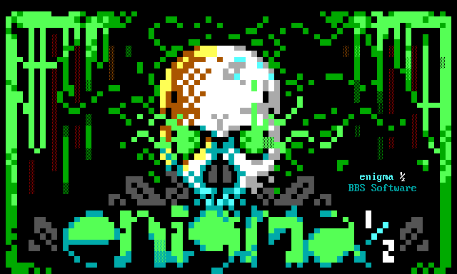

ENiGMA½ is a modern BBS software with a nostalgic flair!
Features Available Now
- Multi platform: Anywhere Node.js runs likely works (known to work under Linux, FreeBSD, OpenBSD, OS X and Windows)
- Unlimited multi node support (for all those BBS “callers”!)
- Highly customizable via HJSON based configuration, menus, and themes in addition to JavaScript based mods
- MCI support for lightbars, toggles, input areas, and so on plus many other other bells and whistles
- Telnet, SSH, and both secure and non-secure WebSocket access built in! Additional servers are easy to implement
- CP437 and UTF-8 output
- SyncTERM style font and baud emulation support. Display PC/DOS and Amiga style artwork as it’s intended! In general, ANSI-BBS / cterm.txt / bansi.txt are followed for expected BBS behavior.
- Full SAUCE support.
- Renegade style pipe color codes.
- SQLite storage of users, message areas, etc.
- Strong PBKDF2 backed password encryption.
- Support for 2-Factor Authentication with One-Time-Passwords
- Door support including common dropfile formats for legacy DOS doors. Built in BBSLink, DoorParty, and Exodus!
- Bunyan logging!
- Message networks with FidoNet Type Network (FTN) + BinkleyTerm Style Outbound (BSO) message import/export. Messages Bases can also be exposed via Gopher, or NNTP!
- Gazelle inspired File Bases including fast fully indexed full text search (FTS), #tags, and HTTP(S) temporary download URLs using a built in web server. Legacy X/Y/Z modem also supported!
- Upload processor supporting FILE_ID.DIZ and NFO extraction, year estimation, and more!
- ANSI support in the Full Screen Editor (FSE), file descriptions, etc.
- A built in achievement system. BBSing gamified!